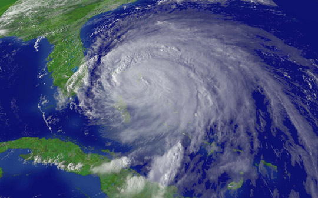

- Title Page
- Introduction
- Investigative Reporting at the Sun-Sentinel
- Storms Galore
- The Federal Emergency Management Agency
- Raising Questions
- Going to Print
- Waiting for Records
- Into the Neighborhoods
- A Morning Meeting
- The Next Story
- Inspectors
- The Data Arrives
- Results and Sources
- Criminals
- Putting the Pieces Together
- Nationwide?
Raising Questions
By Friday, September 17, 2004, Kestin had learned a few interesting things—but she was unsure what they added up to. She had confirmed that FEMA had approved recovery funds for damages from Hurricane Frances in a county the storm had barely touched. She had also discovered that Miami-Dade County had received more FEMA money than some Florida counties much closer to the storm’s landfall, which had endured more rain and stronger winds. But she had no idea why FEMA had approved the payments. The deputy managing editor, realizing that the story’s scope was growing, on Monday, September 20 assigned social services reporter O’Matz to help Kestin.
The next step, the two reporters reasoned, was to find residents of Miami-Dade who had received FEMA funds, and find out what kind of storm damage they had sustained. That was not so easy. Kestin knew there were nearly 10,000 claimants, but the county had a population of over 2 million. [16] The reporters couldn’t concentrate on storm damage zones, because there weren’t any. So to get names, Kestin on Monday emailed FEMA a Freedom of Information Act (FOIA) request.
FOIA . The 1966 federal Freedom of Information Act established the public’s right to access records from federal agencies. Materials subject to FOIA included agency records, “such as print documents, photographs, videos, maps, e-mail and electronic records—that were created or obtained by a Federal agency and are, at the time the request is filed, in that agency's possession and control.” [17] The law provided nine exemptions to FOIA requests—for example, if the requested information treated national security or proprietary business matters.
As a federal agency, FEMA’s records fell under FOIA’s jurisdiction. But an agency lawyer denied Kestin’s request, claiming the information she sought was exempt. Kestin, who had met with such refusals before, fired off an immediate reply demanding that he cite the specific law exempting the names and addresses. She explains:
At least 50 percent of the time when you’re turned down on a FOIA request, in my experience if you challenge them on their basis for it, it’s flawed. You can often get what you’re looking for even without getting lawyers involved if you just [ask]... "What is it that you’re not going to give us and why?"
In this instance, however, her persistence did not pay off. FEMA’s lawyer wrote back to invoke the “personal privacy” exemption, which states that a government agency is not bound to release “personnel and medical files and similar files the disclosure of which would constitute a clearly unwarranted invasion of personal privacy.” [18] This stance was at least legally plausible. The Sun-Sentinel ’s lawyers could sue for the information, but a court case could take years and still not get the paper what it wanted.
ZIP codes. The reporters were back to square one. A frustrated Kestin asked herself: “If we can’t get the names and addresses, what can we get?” FEMA’s public affairs office, it turned out, was willing to provide a list of total aid by ZIP postal code. That would at least allow the reporters to identify which areas of Miami-Dade had received the most money—presumably, that was where they would find aid recipients. It was not an ideal solution, however; ZIP codes often encompassed several square miles. [19] But it was better than nothing, so Kestin filed a second FOIA request for the agency’s aid data by ZIP code.
While Kestin and O’Matz waited for FEMA’s data, they discussed how to assemble a broad story pointing out the discrepancy between the aid Miami-Dade County had received and the area’s actual damage. They worried that another newspaper or television station might get the story first if they did not publish something soon. But until the ZIP code data arrived, FEMA would give them no information more specific than the amount of aid it had approved for each Florida county. Kestin argued that, for the first story at least, they could rely on sources closer to home. They needed to prove that Hurricane Frances had caused minimal damage in Miami-Dade County, and they would have to be thorough—one overlooked area of serious damage in the county could undermine the whole story.
They decided to interview government and emergency management officials in all of Miami-Dade’s 34 municipalities. So they divided up the list and spent the last two weeks in September finding contacts and making calls. Slowly, Kestin and O’Matz grew more confident in their story as, one by one, county officials reacted with disbelief to the news that FEMA had paid large assistance sums to Miami-Dade residents. None had received reports of significant damage in their areas.
By early October, the reporters’ survey had turned up only two apartment buildings with roof damage from the hurricane, and a few houses on which trees had fallen. They also learned that official damage assessments and insurance claims were not in line with the countywide aid disbursement figures that FEMA had given to Kestin on September 15. With this confirmation of their suspicions, O’Matz and Kestin decided to venture into the most storm-vulnerable parts of the county. Mobile home communities generally fared poorly in hurricanes. If they could find no damage from Hurricane Frances at area trailer parks, they reasoned, they would have exhausted all legitimate explanations for the high amount of disaster relief in Miami-Dade County. Sure enough, when O’Matz contacted a mobile home community in northwest Miami-Dade on Friday, October 1, she was told there was no damage.
 Satellite image of Hurricane Frances, Courtesy NOAA NOAA . Over the same period, Database Editor Maines was concentrating on the weather, analyzing data from the National Oceanic and Atmospheric Administration (NOAA), a government agency that provided meteorological information. Examining windspeed and rainfall figures for Hurricane Frances, he confirmed that the storm in Miami-Dade did not even meet the definition of a hurricane. Frances had reached a windspeed of 145 miles per hour elsewhere. But its “maximum sustained winds”—highest average windspeed over a minute, a standard storm-force measurement—were only 53 mph, well below the hurricane-force threshold of 74 mph. [20] The National Weather Service also tracked weather data. When Maines called the organization’s Miami bureau for confirmation of his analysis, a meteorologist concurred that, “In general, there wasn’t anything we would consider strong wind or rain.” [21]
Footnotes
[16] United States Census, Miami-Dade County QuickFacts, 2000 .
[17] National Security Archive, “ FOIA Basics ,” 2008.
[18]
Freedom of Information Act, 5 USC § 552, as amended in 2002, United States Department of Justice.
For a Justice Department brief on the history and application of FOIA’s personal privacy expemption, see
Exemption 6
.
[19] United States Census, “ 331 3-Digit ZCTA -- 5-digit ZIP Code Tabulation Area ,” Geographic Comparison Table, 2000.
[20] National Hurricane Center: Tropical Cyclone Report--Hurricane Frances
[21] Sally Kestin and Megan O’Matz, “Amount of hurricane disaster aid to Miami-Dade County, Fla., raises questions,” South Florida Sun-Sentinel, October 10, 2004.